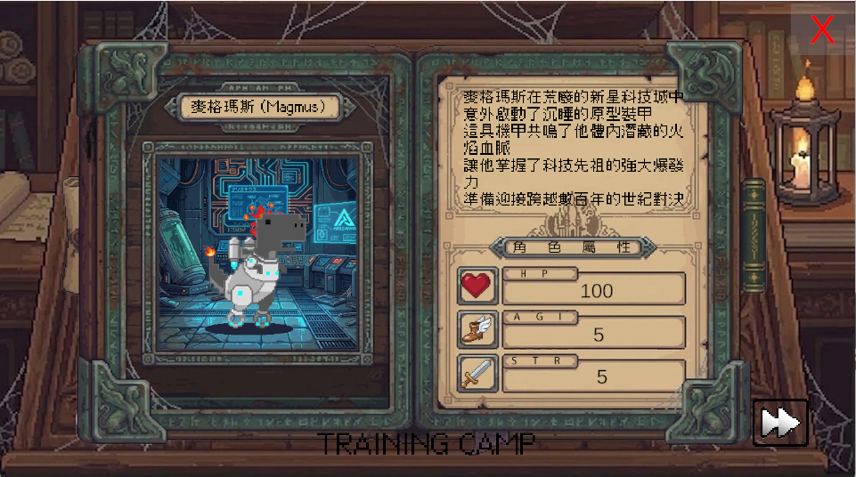

Flame Tech
麥格瑪斯 (Magmus)
曾是克羅姆村平凡的小恐龍。在科技城廢墟中意外鑽入「原型反應裝甲」，喚醒了血脈中的火焰力量，能凝聚龍炎火球。
普通攻擊：龍炎超載彈 (Draco-Overdrive)
麥格瑪斯體內的「科技先祖」血脈與反應裝甲產生共鳴。當他張開口，裝甲的冷卻管道會瞬間轉為高熱的亮橘色，將體內的火焰能量壓縮、加速，並透過裝甲的集束口吐出一顆高密度的「龍炎火球」。這不僅僅是魔法的火焰，更是融合了微型核聚變技術的科技爆裂彈，能輕易融穿敵人的防線。
大招：【新星・七彩烈焰風暴】(Nova: Prism Inferno)
麥格瑪斯將裝甲的反應爐超載運運轉，徹底解放「科技先祖」的潛能。裝甲上的符文瞬間亮起，將原本純粹的龍炎透過科技稜鏡進行極致的分光與增幅。伴隨著裝甲釋放的蒸汽與轟鳴，麥格瑪斯向四周瞬間呈圓弧狀爆發射出 12 顆流光溢彩的「七彩火球」。